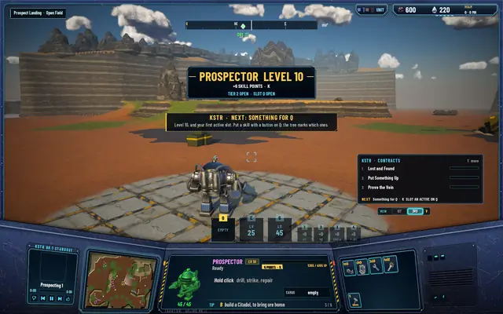
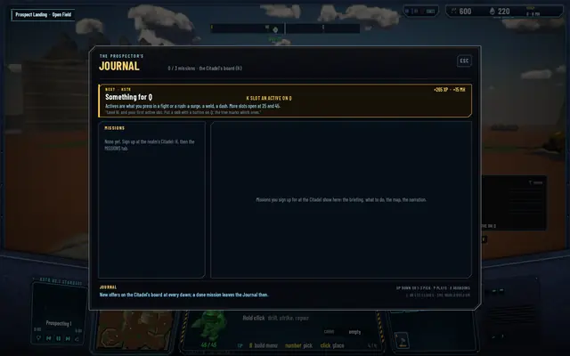
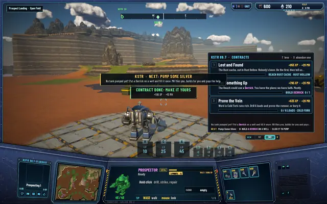
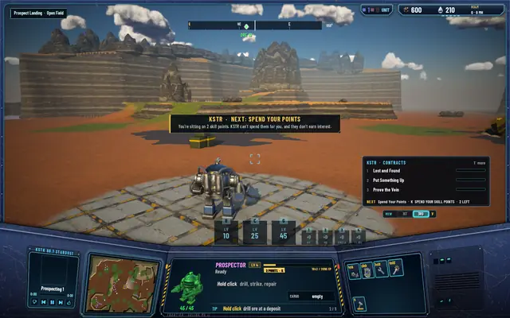
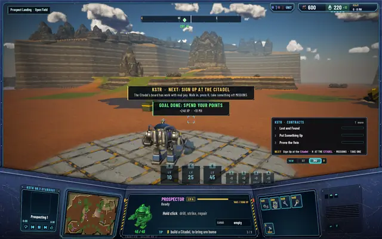
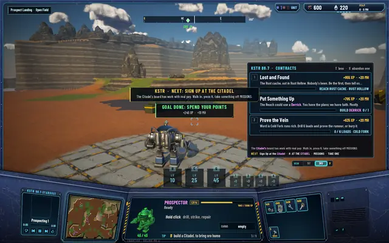

“I reached level 10, now what?”
That's what I asked after playing to level 10. The first ten minutes walk you through landing, mining and your first Citadel, and then the game went quiet. Now the radio keeps one goal in front of you, always the next useful thing for your level.

One goal at a time
KSTR, the station on your radio, walks a chain of 15 goals in order and shows you the first one you haven't done that your level allows. A goal you've already met when its turn comes is passed without a word, so a pilot who found its own way never gets told to do what it did. When the next goal needs a higher level, KSTR says so ("Reach level 15") and names what that level opens.
The goal isn't a contract. It sits beside the three daily contracts and the Citadel's missions, it never blocks anything, and it pays a little when you do it: about three minutes of play in XP at your level, and 5 MH plus your level.
- Level 3: pump MH at a Derrick.
- Any level: spend your skill points, sign up for a mission at the Citadel, buy something at its shop.
- Level 5: a gatling gun by your ore, and a mercenary.
- Level 8: a Hab Dome in another region.
- Level 10: a skill on Q, a Sentinel to watch the sky, and the hunt for the Foundry's blueprint.
- Level 15: light the Foundry and make a module.
- Level 25: the Lab. Level 35: the Spacedock, and the Matriarch.
Buildings the realm can only have one of count when any pilot has built them, and a build goal counts as met when the realm is already at its limit, so you're never handed a goal you can't do.
On screen

Level 10: "Put a skill with a button on Q; the tree marks which ones."
The Journal (L) opens with the goal on top, in gold: what, why, and the pay.
The first goal after the opening: put a Derrick on a well and fill one tank.
"You're sitting on 2 skill points. KSTR can't spend them for you, and they don't earn interest."
Done: +240 XP and +10 MH at level 4, and the next goal comes at once.
The NEXT line sits at the foot of the contracts panel.


Where it shows
A gold NEXT line sits under your contracts. A new goal arrives as a toast with KSTR's line, and a goal with a place, like the nearest well with MH or the Citadel, gets a KSTR mark on the world map, the minimap and the compass. The Journal opens with the goal on top. The lines are text for now; narration can come later, as it did for the missions.
Every test suite passes: 488 core, 241 server and 85 network.